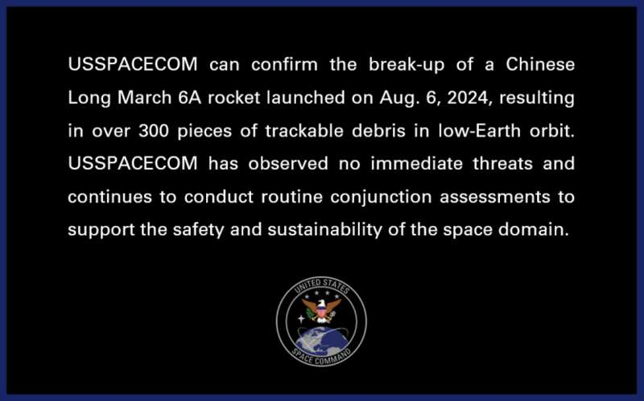
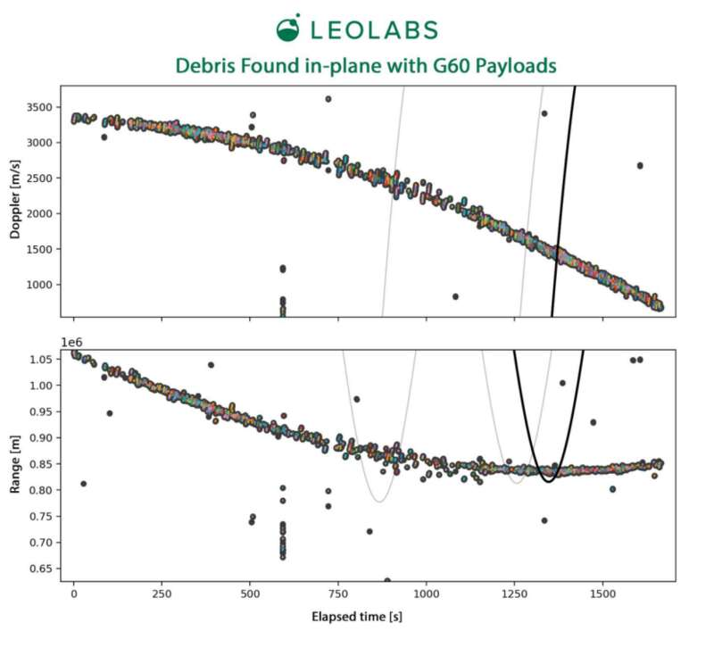
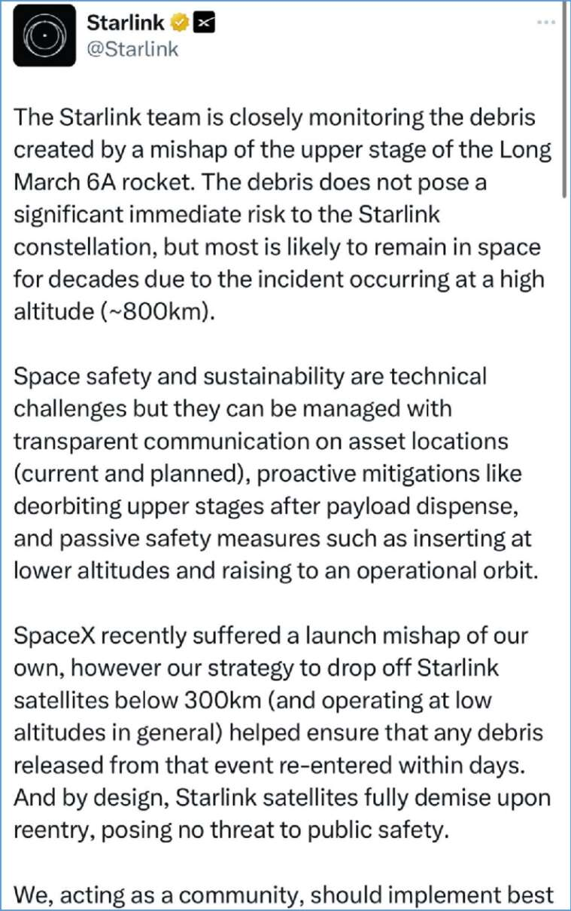
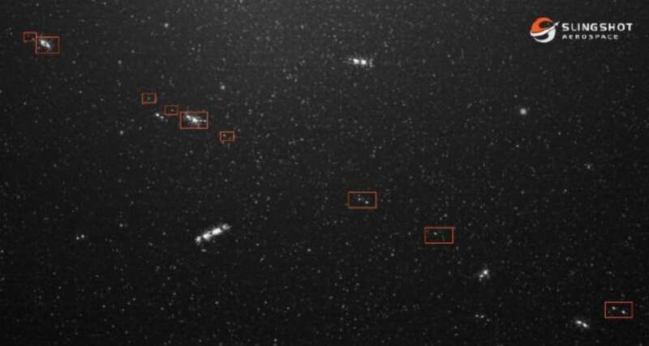
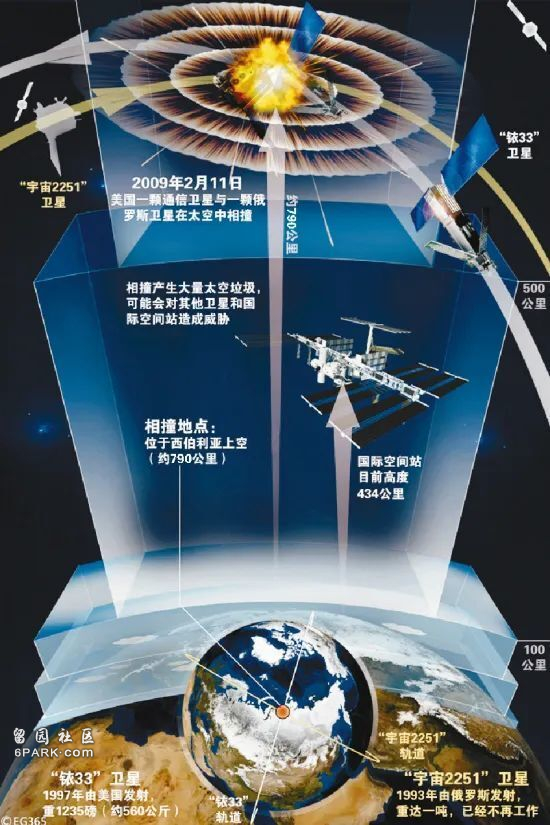
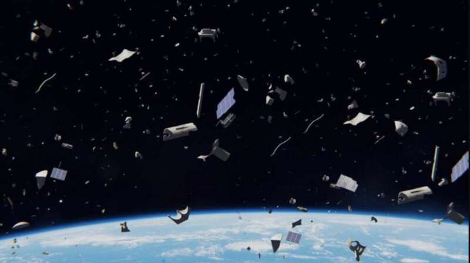
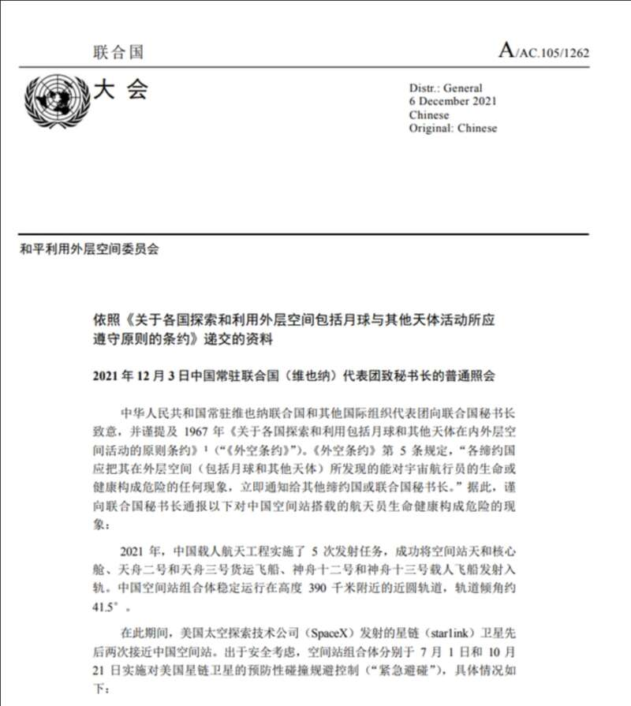

综合美国太空监测机构LeoLabs和美国太空军消息，北京时间8月7日凌晨，在大约13小时前执行“中国星链”千帆星座首批18颗卫星组网任务的长征六号甲火箭末级突然破裂为300余块碎片，分布于800公里左右高度上。
至本文截稿时（8月9日10时），我国有关方面暂未回应，也未看到碎片直接影响卫星的消息。


按类似任务经验，火箭的使命完成后，未级会被留在太空中，变成太空垃圾的一部分。
若不进行“钝化”处理，这些火箭残骸随时可能发生碰撞爆炸，威胁其他在轨航天器的安全，并产生更多的太空碎片。
根据Slingshot Aerospace报道，8月6号，长征六号甲运载火箭完成入轨任务后，留轨二级解体，产生了60多片碎片。
星链Starlink官方也回应，团队正在密切监测长征六号甲火箭二级的碎片。

星链官方对长六甲末级碎片的声明
这些碎片不会对Starlink星座造成重大的直接风险，但由于事故发生在约800公里，大多数碎片可能会在太空中停留数十年。
不过，根据今天的观测，其碎片数量已经达到了700个以上，并有可能增长至900个。

合成图像显示了一系列明亮物体沿着与长征6A火箭体及其于2024年8月6日部署的18颗千帆卫星相同的轨道移动，这些物体是由火箭体解体产生的碎片的一部分。 Slingshot Aerospace
空间碎片为什么会产生？怎样预防？如果这次破碎事件为真，我们应怎样看待？
空间碎片主要来源
按最广泛的定义，空间碎片可以指代太空中一切无用的人造物体，篇幅所限，本文主要讨论航天器破损产生的碎片。
航天器破损，主要源于“自爆”和外部撞击。
例如，航天器如内部残留高压气体，在密封容器失效的情况下，就有可能像气球一样爆炸；电池故障自燃，也可能导致类似情况。
外部撞击虽然罕见，但也时有发生。2009年2月10日，美国铱星33与俄罗斯已报废的宇宙-2251卫星在西伯利亚上空碰撞，产生了大量碎片。近地轨道飞行的物体，相对间最大速度可达每秒15公里。即便一块脱落的油漆，都有可能释放出枪击的能量。

2009年美俄卫星相撞事件示意图 搜狐新闻
据外媒单方表述，长征六号甲火箭末级不是第一次出现完成任务后破裂的情况，因此事件源自内部的概率更高。但考虑到国外只能对我国航天器进行精度较低的“外测”（即在非合作状态下测量），这一说法仅供参考。
如何避免碎片产生
如上文所述，空间碎片会威胁其它航天器安全，甚至极端情况下出现凯斯勒效应：航天器连锁碰撞，近地空间全部被碎片占据，人类在几十年时间内无法开展任何航天活动。为了避免这一局面，国际间组织和主要航天国家都制定了指导文件，其思路可以概括为：尽早离轨、离轨前尽量保持完整。

太空垃圾碎片 pixabay
例如国际标准化组织（International Standard Organization）制定的指导性文件-ISO27875与ISO20893中，对运载火箭的设计和运行提出了建议，对消除末级火箭的潜在危险/再入时的标准提出了指导性规范，其中提出：
“在证明可控再入是不可能的情况下，要使火箭位于一个能在25年内再入的轨道”，“如果运载火箭剩余推进剂不足，应将其置于在轨寿命最小化轨道，选择未来干扰低地球轨道和同步轨道可能性最低的轨道”。“末级完成任务后应进行燃料、电气排放。” （由b站网友DF-express整理）。
实践中，目前执行得比较彻底的案例之一是美国SpaceX猎鹰9号火箭，其火箭末级将卫星送入预定轨道后，会调转方向再次点燃发动机，将整个末级送入预定的安全海区销毁，彻底让出轨道空间。
我国多数火箭暂不具备离轨点火功能，但完成任务后都会进行贮箱排空、电池耗尽等钝化操作，尽最大可能让末级在缓慢再入大气层前保持完整。
客观看待偶发破碎事件，积极参与乃至领导国际治理
航天是处于人类能力边缘的学科，目前发射成功率仅做到99%左右，以此类推，空间中偶然发生诸如航天器破裂之类意外也属正常，特别是尚处于磨合期的新型号新任务。因此，就算长征六号甲末级破裂属实，也不用特别“带节奏”。严格遵守流程规范、认真排查原因、避免下次发生即可。
目前近地轨道上绝大多数碎片和太空垃圾，源自美苏冷战时期。空间碎片预防和治理，是所有航天国家共同义务。目前，这一任务的最大挑战，在于缺少类似民航空管体系的国际性强制规范和协调组织。
例如2021年我国向联合国照会的美国星链卫星危险接近中国空间站一事，美方就辩解称一直掌握事态，并根据美国标准，判定两个航天器尚不构成危险接近，故不采取措施。这一辩解充满霸权主义，但在“定量”的国际法规缺位情况下，我方也较难采取进一步实质行动。

2021年我国就美国星链卫星危险接近中国空间站一事向联合国提交的照会文件 联合国和平利用外层空间委员会官网
因此，我国积极参与国际间太空治理；国际间订立强制性规范规则，也是解决碎片问题的重要环节。
2021年9月主席视察航天某基地时的讲话，或许就是最好总结：
“太空资产是国家战略资产，要管好用好，更要保护好。要全面加强防护力量建设，提高容灾备份、抗毁生存、信息防护能力。要加强太空交通管理，确保太空系统稳定有序运行。要开展太空安全国际合作，提高太空危机管控和综合治理效能。”